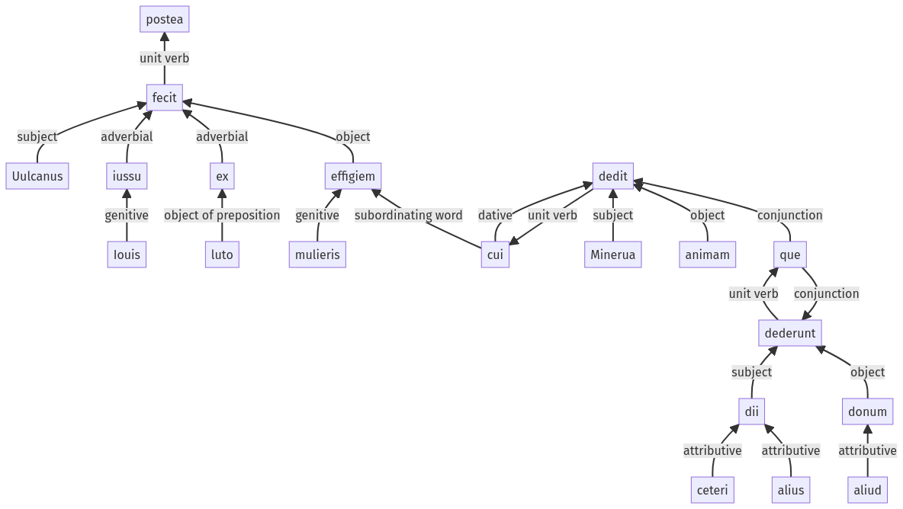

Hyginus, Fabulae, 142a.1.9-142a.1.27a
142a.1.1-142a.1.8a | 142a.1.28-142a.1.31a
Sentence 1413
142a.1.9-142a.1.27a
postea Uulcanus Iouis iussu ex luto mulieris effigiem fecit, cui Minerua animam dedit, ceteri que dii alius aliud donum dederunt;
1 postea Uulcanus Iouis iussu ex luto mulieris effigiem fecit
2 cui Minerua animam dedit
2 ceteri que dii alius aliud donum dederunt
postea Uulcanus Iouis iussu ex luto mulieris effigiem fecit, cui Minerua animam dedit, ceteri que dii alius aliud donum dederunt;
Highlighting:
- connecting words
- unit verb
- subject
- object
Color code:
- independent clause (level 1, transitive verb)
- subordinate clause (level 2, transitive verb)
- subordinate clause (level 2, transitive verb)
